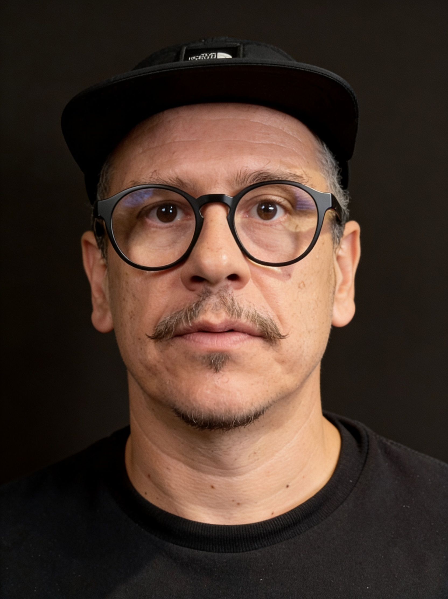

Artista visual e diretor de arte com 25 anos de experiência na intersecção entre arte, tecnologia e arquitetura. Cofundou em 2015 o Ateliê Digital Analógico ao lado de Tatiane Gonzalez, plataforma que se tornou referência nacional em videomapping autoral, ambientes imersivos e experiências sensoriais interativas.
Como diretor de arte, assina a linguagem visual de projetos de grande escala — de videomappings em fachadas históricas a conteúdos de turnês premiadas. Sua direção combina pesquisa estética rigorosa, domínio técnico de animação 2D/3D e VFX, e leitura sensível da arquitetura e do espaço urbano como suporte narrativo. É o responsável pela direção criativa do conteúdo audiovisual proposto para a fachada da Catedral Angelopolitana.
O Ateliê Digital Analógico é uma plataforma criativa fundada em 2015 pelo artista visual Caio Fazolin e por Tatiane Gonzalez. O duo desenvolve projetos que cruzam arte, tecnologia e intervenção urbana, atuando com videomapping, instalações imersivas, realidade aumentada e virtual, light design e experiências sensoriais interativas.
O estúdio coleciona colaborações com festivais internacionais, grandes marcas e nomes relevantes da cena cultural brasileira. Sua trajetória é marcada por criações autorais e conteúdo visual de alto impacto — da Times Square aos prédios históricos da Virada Cultural, da COP28 ao Sesc DF, das turnês de Liniker e Titãs aos lançamentos de Netflix e Sony Pictures.
Com olhar artístico e pensamento crítico, o Ateliê se firma como referência na criação de experiências audiovisuais que ampliam os sentidos e conectam arte e tecnologia de forma transformadora.
Instagram: @ateliedigitalanalogico